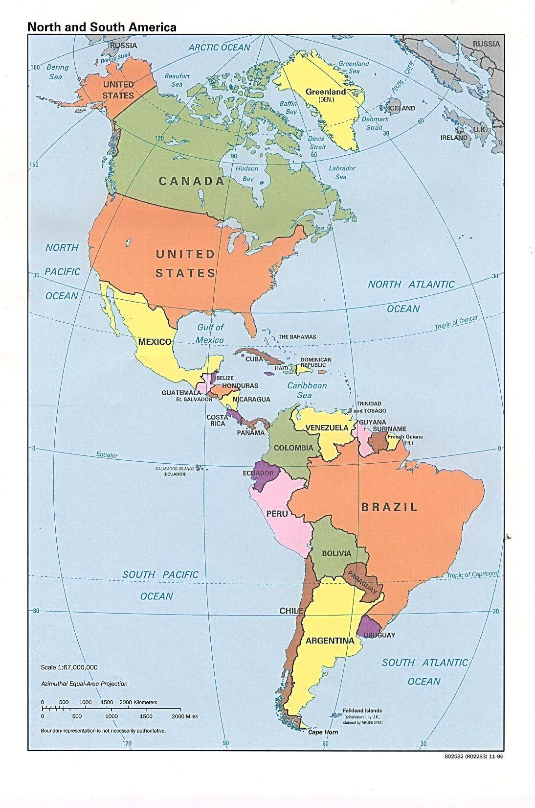
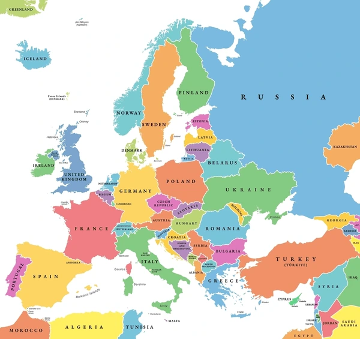
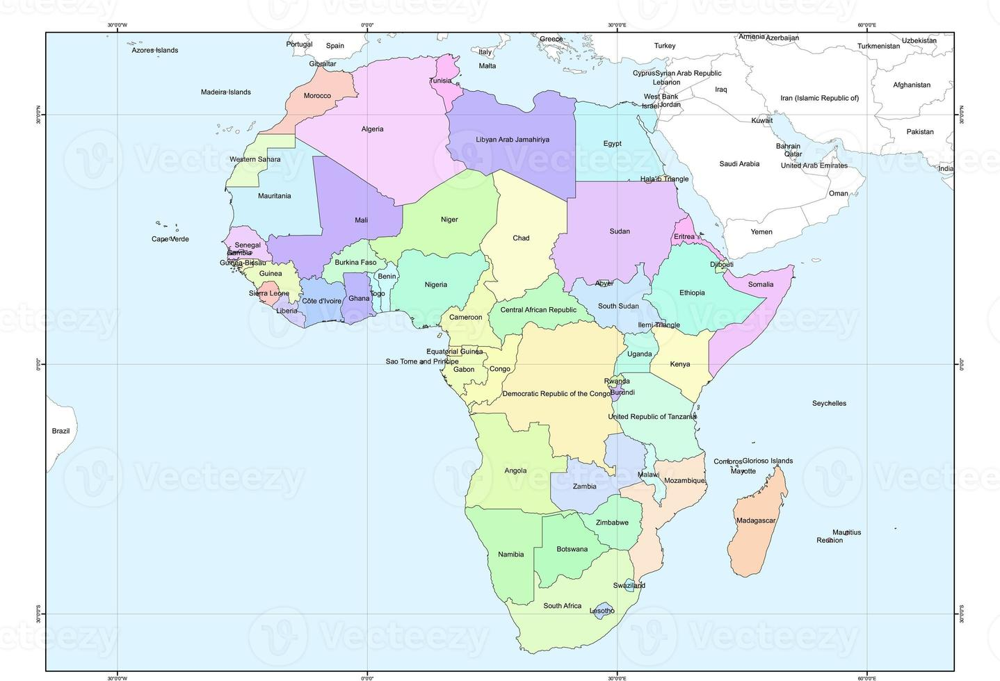
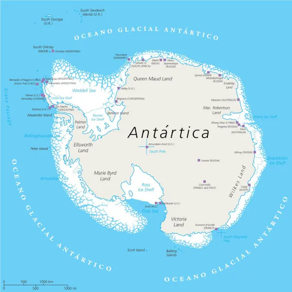

Practica tablas
Continentes
América
Europa
Asia
África
Oceanía
Antártida
Canadá
Belice
Venezuela
Nicaragua
Chile
Bulgaría
Dinamarca
Noruega
Ucrania
Irlanda
Filipínas
Armena
Birmanía
Malasia
Vietnam
Ghana
Angola
Zimbabue
Uganda
Kenia
Fiyí
Nauru
Tonga
Nueva Zelanda
Palaos
La Antártida Argentina (Argentina)
La Dependencia Ross (Nueva Zelanda)
Tierra Adelia (Francia)
Territorio Antártico Australiano (Australia)
Isla Pedro I o Tierra de la Reina Maud (Noruega)
La Antártida Chilena (Chile)
Marie Byrd(Sin pertenencia)



